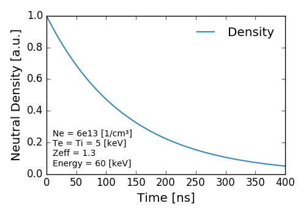

Collisional Radiative Model
Collisional Radiative Model
The collisions that a neutral particle experiences as it travels through a plasma changes the distribution of its energy level population. This process can be modeled as a system of differential equations $$ \begin{bmatrix} \frac{\mathrm{d} f_1 }{\mathrm{d} t}\\ \vdots\\ \frac{\mathrm{d} f_n }{\mathrm{d} t} \end{bmatrix} = \begin{bmatrix} a_{11} & \cdots & a_{1n}\\ \vdots & \ddots & \vdots\\ a_{m1} & \cdots & a_{mn} \end{bmatrix} \begin{bmatrix} f_1\\ \vdots\\ f_n \end{bmatrix} $$ where \(f_n\) is the flux of neutrals [1/s] in the \(n_{th}\) energy level and \(df_n/dt\) is the time derivative. The matrix \(A\) consists of rates, \(a_{mn}\) [1/s] that correspond to the transitions to different energy levels due to different collisional processes. The transition rates for a given atomic process is given by $$c_{mn} = \langle \sigma v \rangle(E_p,T_T) \cdot d_T $$ where \(\langle \sigma v \rangle \) is the effective rate coefficient [cm³/s] at a given beam energy \(E_p\) and target temperature \(T\) and \(d_T\) is the density of the target.
The off-diagonal coefficients of \(A\) given by $$a_{mn} = \sum_k c_{mn}(k) $$ describe a flow from the \(m_{th}\) state into the \(n_{th}\) state due to the different \(k\) atomic processes. In FIDASIM these are called populating transitions since they add to the population of the \(n_{th}\) state. Populating transitions are caused by electron-,ion-,impurity-impact excitation and de-excitation and spontaneous transitions (Einstein coeffecients).
The diagonal elements of \(A\) given by $$a_{nn} = - \sum_k \sum_{m=1} c_{mn}(k) - \sum_j l_n(j)$$ describe the the flow from the \(n_{th}\) state to the different \(m\) and unbounded(loss) states due to the different \(k\) and \(j\) atomic processes. In FIDASIM these are called de-populating transitions since the subtract from the population of the \(n_{th}\) state. De-populating transitions to different \(m\) states are caused by the same physical processes as the populating transitions. The de-populating transistions to the unbounded states i.e. loss mechanisms are caused by electron-,ion-,impurity-impact ionization and charge exchange with ions and impurities.
The system of differential equations can be solved analytically to give $$F(t) = S^{-1} \cdot F(0)\cdot S \cdot \exp(\Lambda \,t)$$ where \(F(t)\) is a vector of the flux of neutrals [1/s] for each energy state after a time \(t\), \(S\) is the matrix of the eigenvectors of \(A\) and \(\Lambda\) is a diagonal matrix containing the eigenvectors of \(A\). The fractional flux of a neutral traveling through a uniform plasma is shown below.

As you can see the relative flux between states converges fairly quickly.
The number of neutrals in a given state after a time \(t\), \(N(t)\), is given by $$N(t) = S^{-1} \cdot N(0)\cdot S \cdot (\exp(\Lambda \,t) - 1)/\Lambda$$ If \(t\) represents the time spent inside a grid cell the neutral density can be calculated by dividing the above equation by \(V_{cell}\). The total neutral density of a mc marker is shown below.

As you can see over time the total number of neutrals decreases exponentially.
Fortran References
- colrad: Fortran implementation
- get_rate_matrix: Constructs rate matrix \(A\)
- AtomicRates: Derived type that stores populating and de-populating transitions